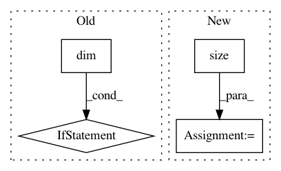

5f6c9b8ca29b56ab2d2e1acfc38ea61001b92c4b,allennlp/common/testing/model_test_case.py,ModelTestCase,ensure_batch_predictions_are_consistent,#ModelTestCase#,147
Before Change
// elements in the batched case. Fixing this in general is complicated;
// we"ll just fix some easy cases that we actually have, for now.
num_tokens = single_predicted.size(0)
if batch_predicted.dim() == 1:
batch_predicted = batch_predicted[:num_tokens]
elif batch_predicted.dim() == 2:
batch_predicted = batch_predicted[:num_tokens, :]
else:
raise NotImplementedError
assert_allclose(single_predicted.data.numpy(),
batch_predicted.data.numpy(),
atol=tolerance,
err_msg=key)
After Change
batch_predicted = batch_predictions[key][i]
if isinstance(single_predicted, torch.autograd.Variable):
if single_predicted.size() != batch_predicted.size():
slices = tuple(slice(0, size) for size in single_predicted.size())
batch_predicted = batch_predicted[slices]
assert_allclose(single_predicted.data.numpy(),
batch_predicted.data.numpy(),
In pattern: SUPERPATTERN
Frequency: 3
Non-data size: 4
Instances
Project Name: allenai/allennlp
Commit Name: 5f6c9b8ca29b56ab2d2e1acfc38ea61001b92c4b
Time: 2018-02-07
Author: mattg@allenai.org
File Name: allennlp/common/testing/model_test_case.py
Class Name: ModelTestCase
Method Name: ensure_batch_predictions_are_consistent
Project Name: maciejkula/spotlight
Commit Name: bc51dbc0c56f68ed30857755026633f78eef1ae8
Time: 2017-08-20
Author: maciej.kula@gmail.com
File Name: spotlight/layers.py
Class Name: BloomEmbedding
Method Name: forward
Project Name: rusty1s/pytorch_geometric
Commit Name: 1f0750670cf8ea24ad264debf9603002ab0fb565
Time: 2021-03-15
Author: matthias.fey@tu-dortmund.de
File Name: torch_geometric/nn/pool/mem_pool.py
Class Name: MemPool
Method Name: forward